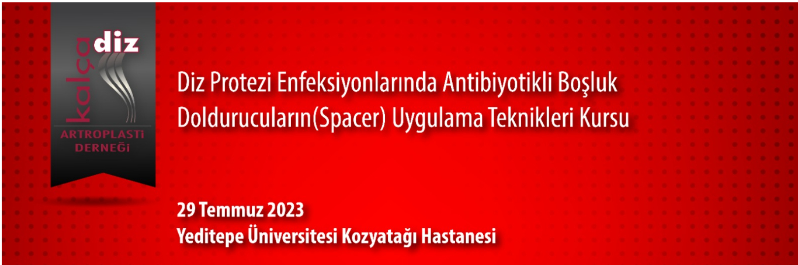

Değerli Meslektaşlarımız,
Kalça Diz Artroplasti Derneği olarak 29 Temmuz 2023 tarihinde Yeditepe Üniversitesi Kozyatağı Hastanesi'nde; Diz Protezi Enfeksiyonlarında Antibiyotikli Boşluk Doldurucuların(Spacer) Uygulama Teknikleri Kursu' nu gerçekleştireceğiz.
Antibiyotiklerin çimento‘ya karıştırılma dozu ve zamanı gibi temel bilgilerin yanında, statik ve dinamik tüm uygulama tekniklerinin ele alınacağı kursun hedef kitlesi kıdemli asistan ve genç uzman meslektaşlarımız olarak belirlenmiştir.
Protez enfeksiyonlarının tedavisinde en yaygın uygulama 2 aşamalı tedavidir. ilk aşama tedavideki bilgi ve deneyimi arttırmaya yönelik bu kursta, teorik ve pratik oturumların olduğu interaktif bir program hazırlanmıştır.
Bir gün sürecek olan kursumuzda sizleri aramızda görmekten mutlu olacağız.
Diz Protezi Enfeksiyonlarında Antibiyotikli Boşluk Doldurucuların(Spacer) Uygulama Teknikleri Kursu'nda buluşmak üzere saygı ve sevgilerimizle.
Kurs Başkanları: Prof. Dr. Faik Altıntaş ve Prof. Dr. Çetin Işık
Dernek Başkanı: Prof. Dr. Emre Toğrul
